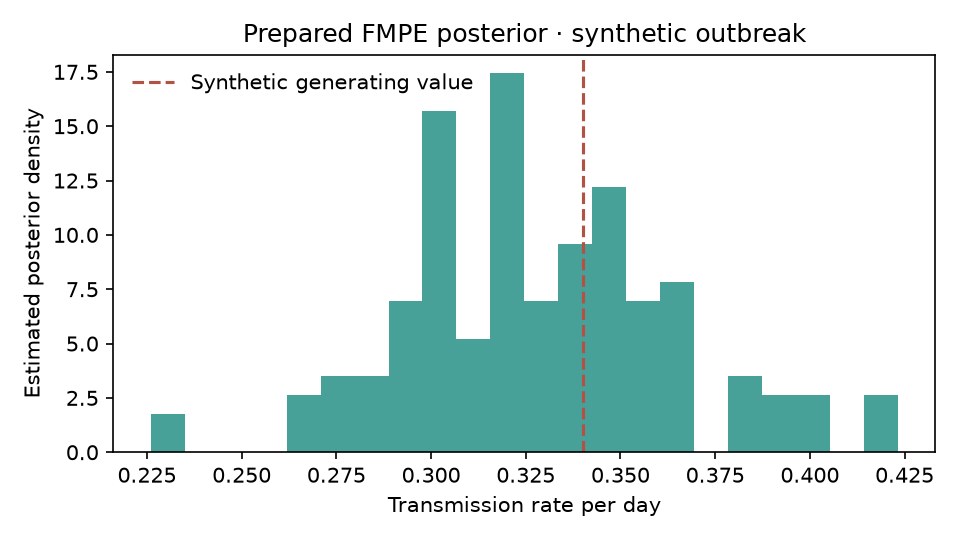

From hidden infections to reported cases.
Before fitting any neural network, check what the simulator generates and how under-reporting distorts the data.
In a closed population of N = 500 people, an outbreak spreads at transmission rate β and individuals recover at rate γ (giving basic reproduction number R₀ = β / γ). Because we only observe a fraction ρ of new infections as daily reported cases Yt, halving the reporting rate from ρ = 50% to ρ = 25% cuts total case counts in half (scale-sensitive summaries) while leaving the day the wave peaks (timing/shape summaries) unchanged. Standard estimators mistake fewer reported cases for a less contagious virus (lower β).
Prior Predictive Envelope & Scale-vs-Shape Conflict
📚 Reference: Three Canonical SIR Formulations Across SBI Papers & 6 Summary Equations
🔍 Execution Audit: How All 14 Models, Surrogates & Checks Were Executed (5 Tiers)
Fourteen methods. One shared benchmark.
All 14 methods share the same 2,048-simulation training bank (ρ = 50%) and are evaluated across 128 independent outbreaks under both Matched (50%) and Shifted (25%) reporting.
We want 90% nominal credible intervals to cover the true parameter ~90% of the time (the vertical dashed target line). Under 50% Matched Reporting (teal circles), neural spline and flow-matching estimators achieve near-ideal ~88–91% coverage. Under 25% Shifted Reporting (amber circles), standard neural flows drop to ~45–56% coverage on β, while RNPE (Spike-and-Slab Summary Criticism) and Generalised Bayes detect or downweight the shifted scale summaries and maintain ~84–88% coverage.
| Estimator & Seed | Execution Tier & Budget | β Coverage (Matched 50%) | β Coverage (Shifted 25%) | γ Coverage (M / S) | R₀ = β/γ Coverage (M / S) | Calibration Verdict (TARP & L-C2ST) |
|---|
Tip: Click any bar in the chart or any row in the table above to inspect that estimator in detail below.
Inspect posterior geometry, calibration & fit.
Changing the estimator, seed, or reporting scenario below automatically updates the method card, global SBC/TARP calibration, 2D joint posterior cloud, and prepared diagnostics.
Marginal SBC Rank Histograms & Joint TARP Coverage Curve
Left (Marginal SBC): If a posterior is well-calibrated, the rank of the true parameter among posterior draws is uniform (bars stay near the dashed target line of 16 inside the shaded 95% confidence band). A pile-up on the right means the posterior systematically underestimates the parameter. Right (Joint TARP): Measures joint 2D credible region coverage across all credibility levels α ∈ [0, 1]. Hugging the dashed diagonal means well-calibrated joint uncertainty.
🔒 Benchmark Specification, Interpretation Notes & SHA-256 Provenance Hashes
Audit the code, trace the bundle & test replay.
Scientific validation goes beyond numbers: inspect pinned paper source code for equation drift, examine an inherited experiment bundle with a documentation discrepancy, and test bitwise replay.
Follow a scientific claim into published source code (RSNL vs RNPE)
Does the time-varying reproduction number R₀(t) actually drive new infections in the pinned RSNL repository, compared to Ward et al.'s RNPE Julia code?
rsnl_sir.py and rnpe_sir.jl via Python AST and evaluates dS/dt, dI/dt, dR₀/dt at R₀ = 0.5 vs R₀ = 2.0.
A posterior, inherited: compare the figure caption against the recorded run
Click any file in the bundle on the right to inspect its exact lines. Compare the reporting rate stated in README.md against config.json and run_manifest.json.
Transmission rate β (γ = 0.15 fixed)

Waiting for the prepared posterior figure.
Synthetic data · Click any file row to inspect line-by-line
posterior.pt)
Reloads the PyTorch flow-matching checkpoint with seed 314159 and compares 128 fresh draws against posterior_samples.npy.
Do the code, config, manifest & caption agree?
Does resampling posterior.pt match the saved baseline?
Is the estimator calibrated (SBC/TARP) and robust to reporting shift?
The data and experiment are synthetic. All 14 estimators and validation checks are backed by SHA-256 verified artifacts.
- Why SBI? (Intractable Likelihood)
- Stochastic SIR models do not have a tractable likelihood
p(Y | θ)because latent compartments (S, I, R) are unobserved. SBI infers parameters directly from forward simulations. - β, γ & R₀ = β/γ
- Transmission rate (β), recovery rate (γ), and basic reproduction number (expected secondary cases per infection).
- Matched (50%) vs Shifted (25%)
- Models are trained assuming 50% of cases are reported. Under Shifted data, only 25% are reported—testing robustness to misspecification.
- 90% Coverage & SBC
- Across 128 test outbreaks, a calibrated 90% credible interval should contain the true parameter ~90% of the time, with flat SBC rank histograms.
- Joint TARP (IACE)
- Tests joint 2D (β, γ) credible regions. Lower Integrated Absolute Coverage Error (IACE → 0) means better joint calibration.
- RNPE Spike-and-Slab
- Critiques each summary statistic, flagging scale summaries that conflict with epidemic timing under under-reporting.